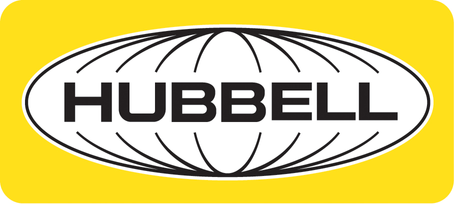
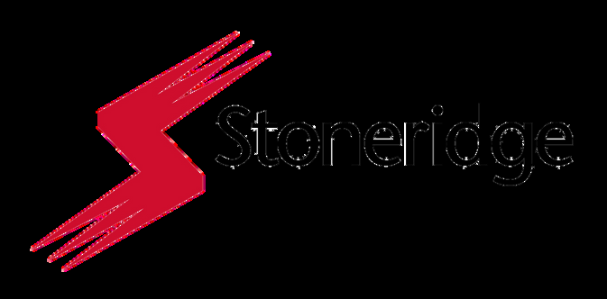
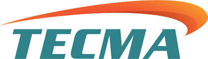

¿POR QUÉ ANGROUP?



Servicios integrales: fabricación de PCBs, automatización, drones industriales, IoT, visión artificial, robótica, diseño mecánico, prototipado rápido y desarrollo de software industrial.
VER SERVICIOS →FC 2026 INDUSTRIA — Torneo Empresarial Mundialista. 48 empresas compiten en formato mundialista. Networking premium, Zona Gaming y Terraza VIP en Cd. Juárez, Chih.
⚽ VER EVENTO →Una fuerza líder en el fortalecimiento de las capacidades de manufactura, proveedor integral de capacitación, consultoría y soluciones técnicas avanzadas en México y Estados Unidos. Con experiencia en certificaciones críticas, membresía en AIAG y capacitación en Core Tools para el sector automotriz.
VER CURSOS ↓CAPACITACIÓN INDUSTRIAL PRESENCIAL
Contamos con más de 100 cursos en nuestro catálogo. Un asesor puede orientarte.
Empresas industriales que confían en ANGROUP
"Capacitamos a todo el personal de línea en IPC-A-610. El instructor se adaptó a nuestros turnos sin problema. Los DC-3 llegaron en tiempo."
"El curso de NOM-035 fue exactamente lo que necesitábamos para cumplir con la auditoría. Muy práctico, con ejemplos reales de la industria."
"Llevamos 2 años trabajando con ANGROUP para capacitar a nuestros ingenieros en Lean Six Sigma. Resultados medibles en los primeros 3 meses."